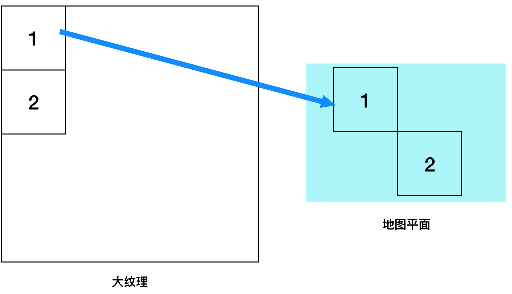
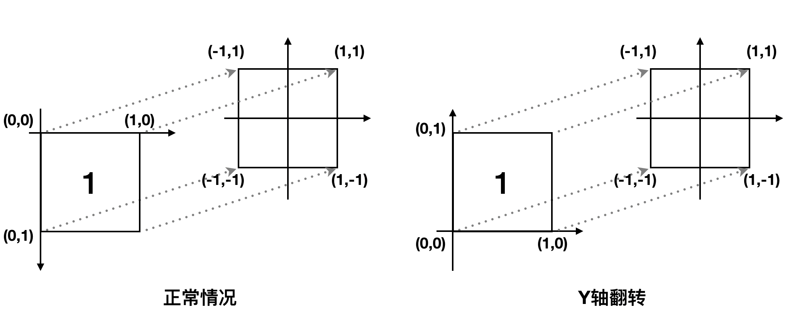
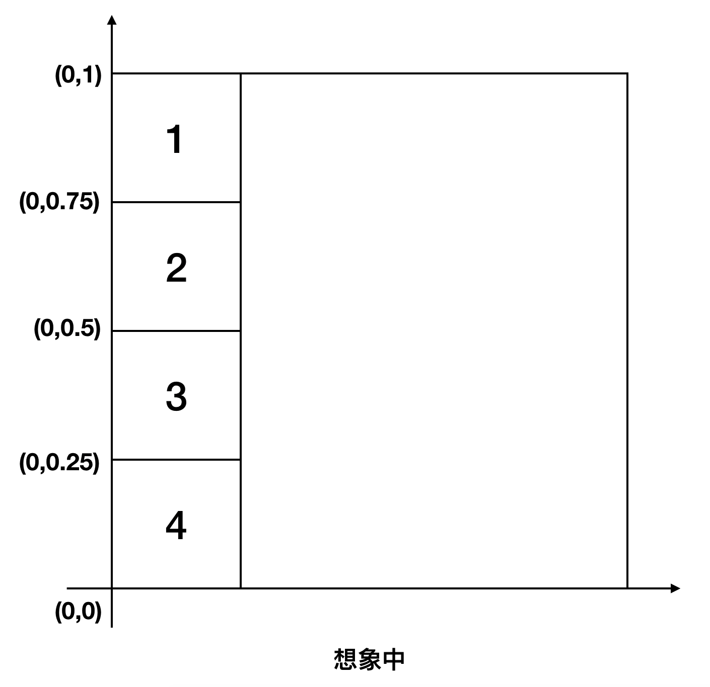
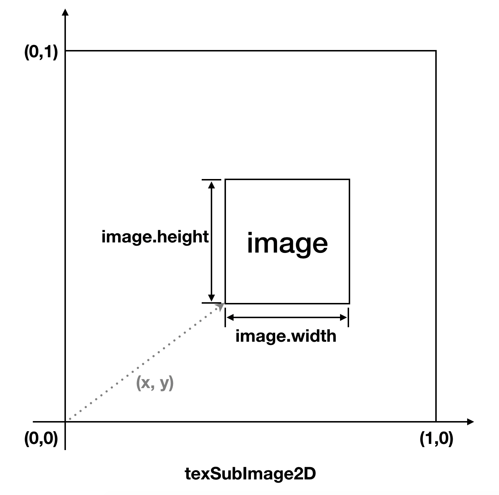
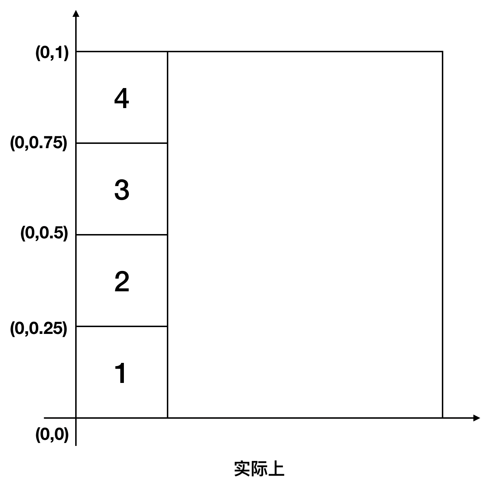
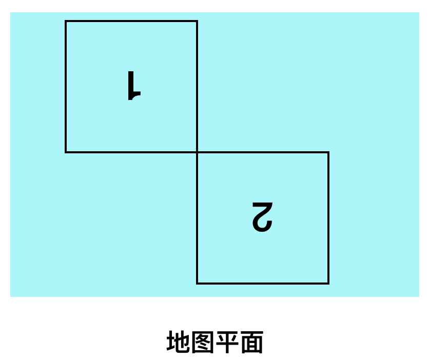
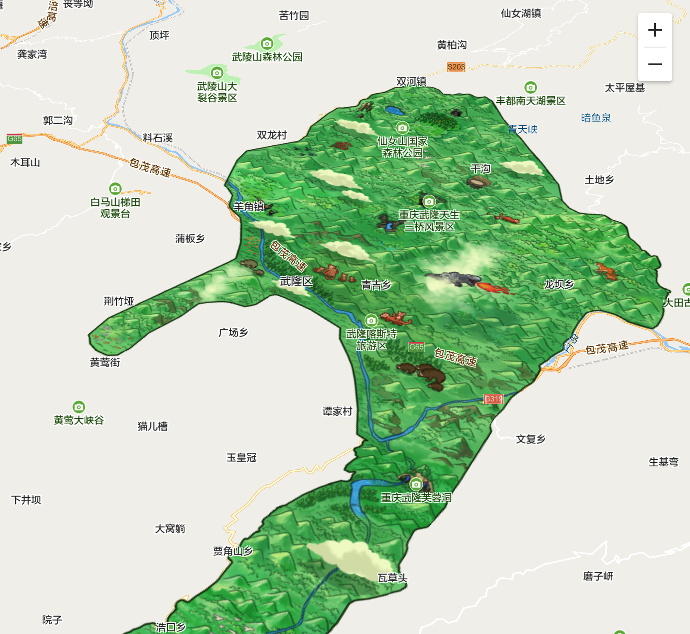

案例背景
最近在开发基于 WebGL 的地图渲染API，实现自定义栅格图层（将地图切分为等大的正方形，并以图片进行拼接渲染）时，为了节省纹理上传的开销，将栅格瓦片集中绘制到一张纹理上，然后绘制时根据瓦片各自的纹理坐标取各自的纹理，大概示意图如下：

瓦片根据加载的先后顺序依次排列绘制到大纹理上，占位宽度一致，竖向排列。比如若瓦片大小为256px，那么瓦片1的位置为{x:0, y:0}, 瓦片2的位置为{x:0, y:256}。
然后出现了一系列问题：1. 瓦片错乱：瓦片1的位置显示了瓦片4的内容；2. 瓦片内容倒置。
问题分析
根据调试定位，发现问题的根源在于Y轴翻转。
问题1: Y轴翻转是什么？为什么要翻转？
先看看没有任何处理的情况下如何绘制纹理，我们绘制瓦片的基本顶点模型是一个中心在原点的正方形，对于每个顶点坐标，需要映射到一个纹理坐标（下图左），传给片元着色器，再使用 texture2D() 取纹理像素，这种情况下左上角顶点(-1,1)对应的纹理坐标为(0,0)。

纹理坐标系与顶点坐标系的Y轴方向不同，进行坐标映射的时候会不方便，所以如果将纹理坐标系的Y轴翻转则能使坐标映射更容易（上图右）。
WebGL 也提供了相应接口实现该功能， WebGLRenderingContext.pixelStorei() 是 WebGL 中用于描述像素存储模式的函数，其中 UNPACK_FLIP_Y_WEBGL 可以用于设置Y轴是否翻转：
1 | // 1表示翻转，0表示不翻转 |
问题2: 为什么Y轴翻转会导致瓦片错乱呢？
如上文所述，首先需要通过 texImage2D 创建一个大纹理，然后使用 texSubImage2D 将瓦片绘制到大纹理上：
1 | // x, y 表示偏移量 |
这个接口用于改变纹理中指定子区域的数据，可以类比于 CanvasRenderingContext2D.drawImage() ，我们平常使用 drawImage 时都是以左上角为原点进行偏移，所以想象中的大纹理是如下图所示的那样，瓦片1的左上角对应纹理坐标(0, 1)，左下角为(0, 0.75)，以此类推。

但实际上Y轴翻转并不只作用在片元着色器的纹理中，使用 texImage2D 创建大纹理时其像素存储模式就已经确定了，当执行 texSubImage2D 时也会对 image 的像素存储位置进行反转，其执行过程是这样：

所以实际上大纹理应该长如下这样：

所以当使用纹理坐标左上角(0, 1)+左下角(0, 0.75)时，我们取到的是瓦片4的纹理，最终导致了瓦片错乱。
问题3: 为什么瓦片会倒置？
正确取得纹理坐标后，又出现了新的问题：

瓦片在屏幕上显示出来是上下颠倒的，且这种情况只出现在chrome/firefox里，因为在这两个浏览器中我们使用了 createImageBitmap 将blob格式的图片转为了位图，而在safari浏览器（不支持 createImageBitmap）中我们将blob格式转为了 Image 对象，最终导致了这种差异，所以我们从 ImageBitmap 着手去定位问题原因。
ImageBitmap 表示位图图像，用于在canvas中绘制图像，相比较于 Image 其延迟较低，因为在执行 texSubImage2D 将 Image 绘制到纹理上时也会先将其转为 ImageBitmap：
不论是在 canvas 里绘制2d图像，还是在 WebGL 中创建纹理，当使用图像时浏览器会把图像做一次解码（decode）处理。这个解码也就是把图像的原始格式（比如 jpeg、png 等）统一转换为位图，即每个像素使用 RGB 或 RGBA 来描述。当图片尺寸比较大的时候，解码也会有一定的消耗，而且这个耗时是同步的。——《高性能 WebGL —— 使用 ImageBitmap 提升纹理性能》（http://www.jiazhengblog.com/blog/2019/03/24/3407/）
同时 WebGL 规范里对 ImageBitmap 有一些特殊的描述，当介绍 pixelStorei 的三个参数：UNPACK_FLIP_Y_WEBGL、UNPACK_PREMULTIPLY_ALPHA_WEBGL、UNPACK_COLORSPACE_CONVERSION_WEBGL 时，明确说明了其对 ImageBitmap 无效，只能在创建 ImageBitmap 的时候就进行相应设置：
If the TexImageSource is an ImageBitmap, then these three parameters will be ignored. Instead the equivalent ImageBitmapOptions should be used to create an ImageBitmap with the desired format.
所以可以大胆猜测，pixelStorei 所指定的像素存储模式其实作用于将图像解码转为位图的预处理过程。当我们直接将位图绘制到纹理上时就没有这个预处理过程了，所以 UNPACK_FLIP_Y_WEBGL 参数失效了。
小结
UNPACK_FLIP_Y_WEBGL参数用于设置纹理像素存储模式中是否将Y轴翻转，翻不翻取决于你的顶点模型的坐标系方向，适合自己就好。在我们的应用场景里，顶点模型和图像坐标系是反的，所以需要将该参数设为1。- 使用
texSubImage2D上传图片时同样受到UNPACK_FLIP_Y_WEBGL参数的影响。 - 如果上传的图像是
ImageBitmap对象，则在其创建时可通过ImageBitmapOptions中的imageOrientation、premultiplyAlpha、colorSpaceConversion三个参数让其与pixelStorei中所设置的参数保持一致。
最终使用自定义栅格图层实现手绘图叠加到地图上，完成效果如下：
